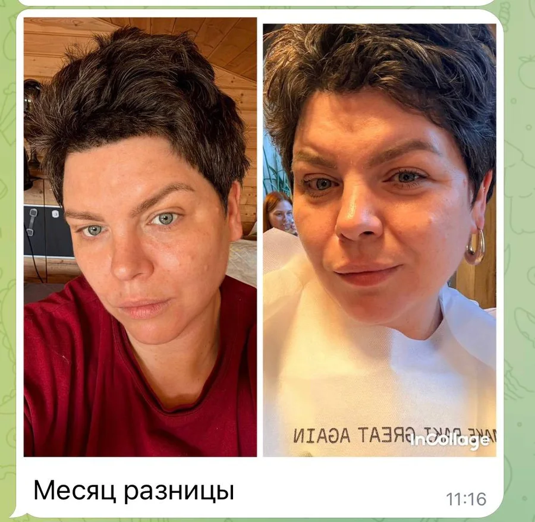
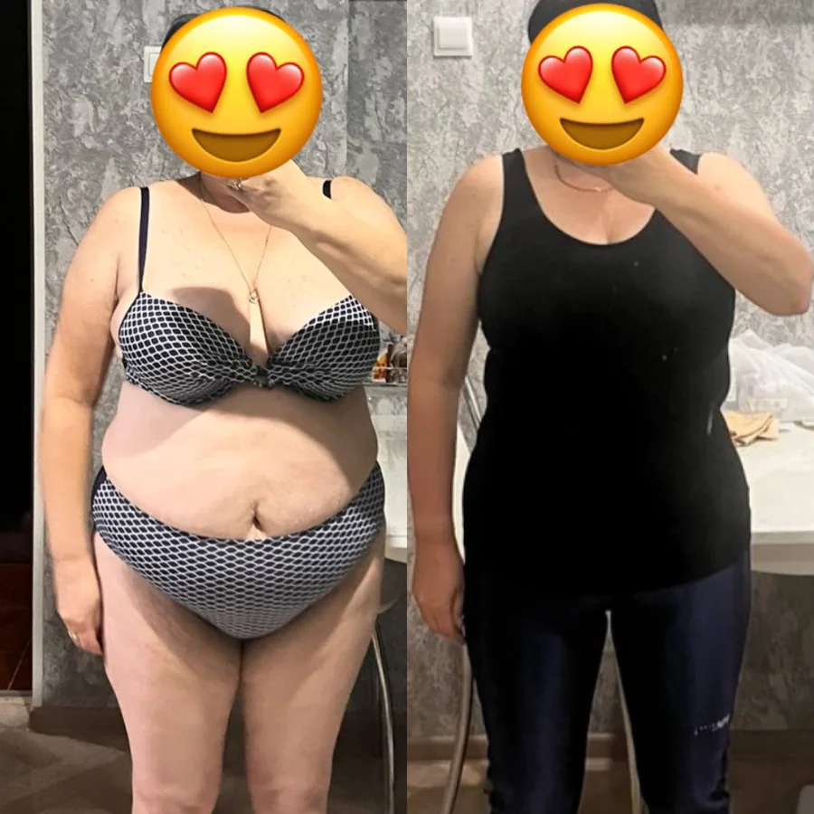
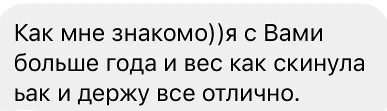
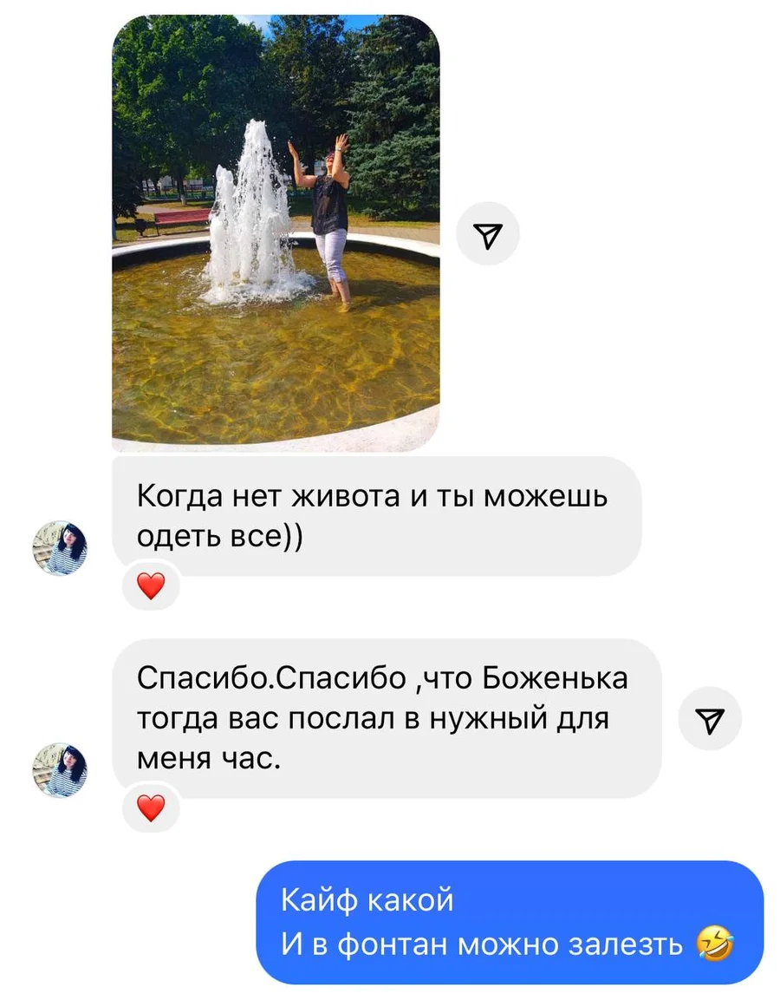
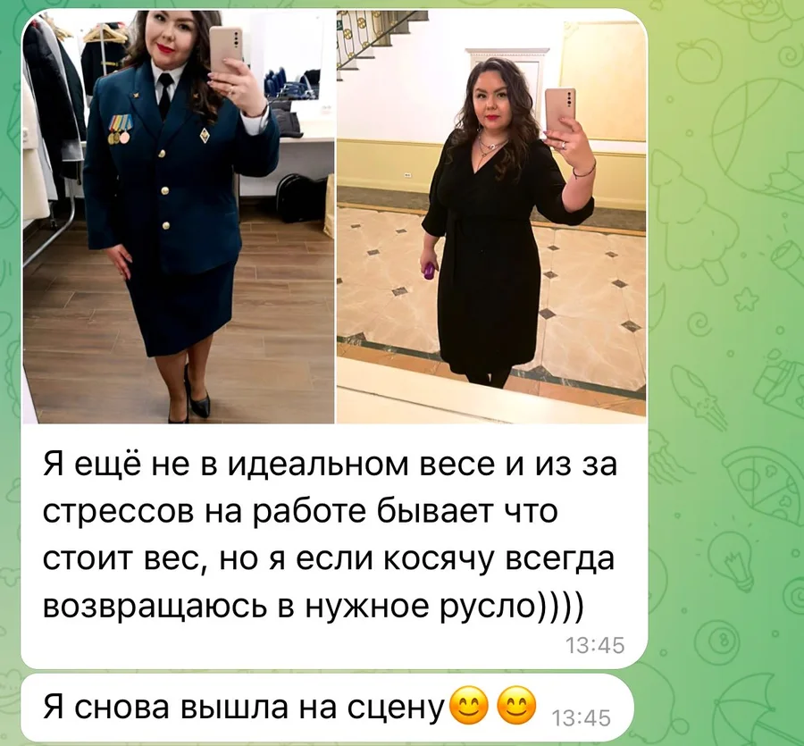

Ты худеешь к сроку на зубах
К лету, к отпуску, к Новому году. Зажимаешь себя в тиски, давишься сухой грудкой с огурцом, пьешь воду литрами и терпишь дикий голод. Вес уходит — ты молодец.
Пошаговая система питания от эксперта по пищевым привычкам, с которой девушки едят борщ, шашлык, десерты, ходят в гости и держат вес без диет, спорта и подсчёта калорий.
Получить доступ к интенсиву за 1 900 ₽К лету, к отпуску, к Новому году. Зажимаешь себя в тиски, давишься сухой грудкой с огурцом, пьешь воду литрами и терпишь дикий голод. Вес уходит — ты молодец.
Один тяжелый вечер, праздник или ПМС. Ты съедаешь кусочек торта, в голове щелкает знакомое: сгорел сарай — гори и хата! В ход идет всё, что лежит в холодильнике.
Сброшенные 4–5 килограммов возвращаются за считанные недели, да еще и приводят с собой парочку новых. Наутро весы пугают отеками, а внутри оседает чувство вины: у других получается, а у меня просто нет силы воли.
Отпуск — новая жесткая диета — новый срыв. И так по кругу из года в год.
С тобой всё абсолютно так! Тебя просто учили быстро худеть, но никто и никогда не учил удерживать вес. Похудеть на голоде может любая. А вот сделать так, чтобы килограммы больше никогда не вернулись — это совершенно другая стратегия.
Забудь про кухонные весы и занесение крошек в приложения. Мы собираем простую тарелку 18–20 см: ладонь белка + ладонь сложных углеводов + полторы ладони свежей клетчатки. Ты сыта 4–5 часов, мозг спокоен, тяги кусочничать нет.
Вес растет не от сахара, а от скрытого жира в десертах. Ты освоишь авторский метод смакования и научишься есть любимые сладости и мороженое так, что мозг получает максимум эндорфинов, а вес стоит на месте.
Вечерний жор начинается утром, когда ты не позавтракала. Мы убираем голод днем полноценной тарелкой, а на вечер внедряем простое правило буфера — 30 секунд, которые помогают перестать заедать усталость и эмоции.
Все уроки и материалы выходят последовательно в твоем личном кабинете:
Разбираемся, почему прошлые диеты заканчивались срывами. Декомпозируем твою реальную цель с шагом по 3–4 кг в месяц. Заключаем три мысленных договора с собой, которые снимают чувство вины за еду.
Главный инструмент удержания веса. Как собирать завтрак, обед и ужин, после которых не тянет к холодильнику. Внедряем правило четырех для закупки в супермаркете, чтобы дома всегда была правильная еда.
Правило легких полок в магазине до 200 ккал и разоблачение жирных ПП-батончиков на 800 ккал. Осваиваем метод смакования.
5 рецептов десертов до 200ккал
Как удерживать вес в ресторанах, как просить соусы отдельно, что брать в столовой на работе и чем наполнить морозилку, чтобы приготовить сытный ужин за 5 минут, когда нет сил стоять у плиты.
Почему после праздника на весах плюс 2 кг и почему это вода, а не жир. Протокол двух дней: как легко вернуться в режим без разгрузочных дней, голодовок и изнуряющих тренировок.
Что на самом деле показывают весы. Как перестать взвешиваться в панике каждое утро, как найти свой персональный коридор нормы и когда действительно нужно корректировать рацион.
Договариваемся со своей внутренней обезьянкой. Разбираем правило 30 секунд буфера перед холодильником, экспресс-тест на истинный голод и закрепляем систему, которая остается с тобой и после интенсива.
Смотри уроки с телефона, планшета или компьютера в удобном личном кабинете.
Смотри короткие видеоуроки от Татьяны и скачивай наглядные PDF-руководства, схемы и списки продуктов прямо на телефон.
Уроки разбиты на короткие смысловые блоки без воды. Их легко изучать в дороге, за утренним кофе или в обеденный перерыв.
Срок доступа зависит от тарифа. Всё это время ты можешь вернуться к памяткам и рецептам в любой момент.





Полный доступ к интенсиву «Вес под контролем»
Комплект прикладных PDF-материалов:
Данные для доступа и чека обрабатываются для исполнения договора по политике обработки персональных данных
Отметь галочку с офертой, чтобы перейти к оплате
Доступ на 30 дней
1 900 ₽
Доступ на 90 дней
2 900 ₽
Ни в коем случае. Конструктор тарелки собирается из самых обычных продуктов: мясо, рыба, птица, крупы, макароны, картофель и свежие овощи. Твоя семья будет сыта и довольна, питаясь вместе с тобой.
Нет. Подсчет калорий превращает жизнь в ад и неизбежно ведет к срыву. Мы используем простую визуальную схему ладоней на тарелке 18–20 см, которую легко применить даже в гостях или ресторане.
Нет. Снижение и удержание веса в первую очередь зависит от того, что и как лежит на твоей тарелке. Спорт полезен для тонуса, но изнурять себя тренировками ради похудения не нужно.
Нет. Татьяна работает с физиологией насыщения и поведенческими пищевыми привычками. Никаких таблеток, добавок и медицинских манипуляций.
Сразу после успешной оплаты на твою электронную почту придет ссылка и данные для входа в твой личный кабинет. Ты сможешь начать обучение в ту же минуту.
Научись удерживать свой идеальный вес и жить в удовольствие!
Присоединиться к интенсиву